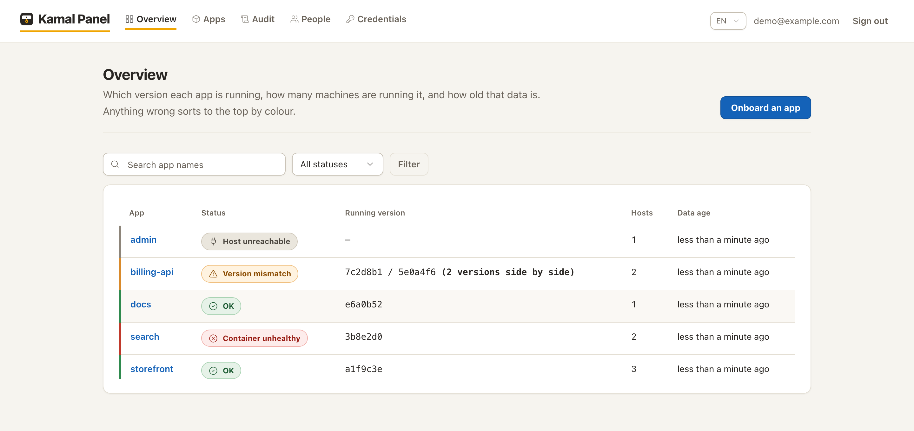
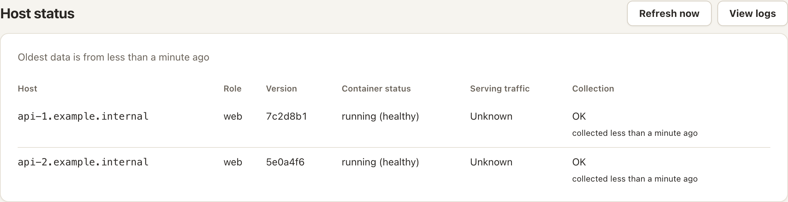
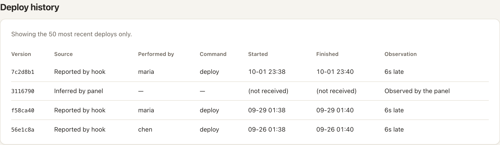

一张表，告诉你哪个 Kamal 应用出了问题。
kamal-panel 通过 SSH 读取 Kamal 本来就会留在服务器上的状态——docker ps、kamal-proxy list——渲染成一张「应用 × 主机」总览表。部署仍然照旧由 CI 执行 kamal deploy。
面板和你的应用一样用 Kamal 部署。密钥和第一个 admin 账号怎么准备，见安装说明。
git clone https://github.com/wenlingang/kamal-panel.git && cd kamal-panel bin/rails db:encryption:init # 妥善保管生成的密钥 # 在 config/deploy.yml 里改好 image、servers.web、proxy.host bin/kamal setup

它是什么，不是什么
它是
- 一个基本只读的视图，覆盖每台主机上的每个 Kamal 应用。
- 出问题时回滚、重启、停止、启动、解锁的地方。
- 自托管：单容器、SQLite，不需要 Redis，也不需要 Postgres。
它不是
- Kamal 的替代品——它调用的就是你在用的那个
kamalCLI。 - 部署流水线——部署仍然留在 CI 里。
- 指标或日志汇聚平台。
为出故障的那一刻而做
比用户先发现版本漂移
只要有一台主机还停在旧版本，整个应用就变成琥珀色。不健康的容器、连不上的机器各有各的颜色。

知道谁部署了什么
pre-deploy 和 post-deploy 两个 hook 会上报执行人、命令，以及失败的部署。没接 hook，面板也会在看到版本变化时记下一次部署。

漂移与健康
版本漂移、不健康的容器、不可达的主机，一眼看清。
部署历史
来自你的 hook，或由面板在版本变化时推断。
就地处理
通过
kamalCLI 回滚、重启、停止、启动、强制解锁，每次操作都有审计记录。三种角色
admin、developer 和 ops。developer 只能操作自己所属的应用。
凭据只写
SSH 私钥与 registry 密码加密存储，保存后不再显示。
中文与 English
整个界面连同邮件，都有简体中文和英文两种语言。
把它当作一把 SSH 私钥
- 面板的安全级别，等于它所管理的每一台服务器的安全级别。任何能访问面板并读到它数据库的人，都可以间接操作你的基础设施。
- 添加应用等于执行代码。解析
deploy.yml会求值 ERB，和 Kamal 自己一样。只让可信的 admin 添加应用。 - 私钥只写。用 Active Record encryption 加密存储，界面只显示指纹，永远不显示私钥本身。
以 MIT 协议开源，可以免费使用、修改和自托管。给仓库点个 star，就能跟进后续更新。